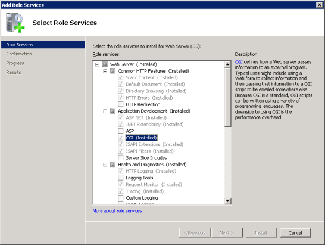

I ran into the Error 500 with PHP 5.5 and Server 2008 R2 x64. The issue was that I installed the 64-bit version of Visual C++ Redistributable 2012 and not the 32-bit version.
Microsoft IIS 7.0 以降
このセクションでは、Internet Information Services (IIS) 7.0 以降を設定して、PHP を Microsoft Windows Vista SP1, Windows 7, Windows Server 2008 および Windows Server 2008 R2 で動かす方法を説明します。 IIS 5.1 や IIS 6.0 を Windows XP および Windows Server 2003 で動かす方法については Microsoft IIS 5.1 および IIS 6.0 を参照ください。
IIS での FastCGI サポートの有効化
FastCGI モジュールは、IIS のデフォルトでは無効になっています。 有効化する手順は、Windows のバージョンによって異なります。
Windows Vista SP1 および Windows 7 で FastCGI サポートを有効化する方法
-
Windows のスタートメニューで "ファイル名を指定して実行" を選び、 "optionalfeatures.exe" と入力して "Ok" をクリックする
-
"Windows Features" ダイアログで "Internet Information Services"、"World Wide Web Services"、"Application Development Features" を展開し、"CGI" チェックボックスを有効にする
-
OK をクリックし、インストールが完了するまで待つ

Windows Server 2008 および Windows Server 2008 R2 で FastCGI サポートを有効化する方法
-
Windows のスタートメニューで "ファイル名を指定して実行" を選び、 "CompMgmtLauncher" と入力して "Ok" をクリックする
-
"Web Server (IIS)" ロールが "Roles" ノードの下に存在しない場合は "Add Roles" をクリックして追加する
-
"Web Server (IIS)" ロールが存在する場合は、"Add Role Services" をクリックして "Application Development" グループの "CGI" チェックボックスを有効にする
-
"Next"、そして "Install" をクリックし、 インストールが完了するまで待つ

IIS で PHP リクエストを処理するための設定
手動インストールの手順 での説明にしたがって、PHP をダウンロードしてインストールします。
注意:
IIS を使う場合は、非スレッドセーフ版の PHP を推奨します。非スレッドセーフ版は » PHP for Windows: Binaries and Sources Releases. で取得できます。
CGI や FastCGI 固有の設定を、php.ini で以下のように行います。
例1 php.ini での CGI および FastCGI 用の設定
fastcgi.impersonate = 1 fastcgi.logging = 0 cgi.fix_pathinfo=1 cgi.force_redirect = 0
PHP 用の IIS ハンドラマッピングを設定するには IIS マネージャのユーザーインターフェイス あるいはコマンドラインツールを使います。
IIS マネージャのユーザーインターフェイスを使った PHP 用ハンドラマッピングの作成
PHP 用の IIS ハンドラマッピングを IIS マネージャのユーザーインターフェイスで設定する手順は次のとおりです。
-
Windows のスタートメニューで "ファイル名を指定して実行" を選び、"inetmgr" と入力して "Ok" をクリックする
-
IIS マネージャのユーザーインターフェイスで、"Connections" ツリービューのサーバーノードを選ぶ
-
"Features View" ページで "Handler Mappings" を開く

-
"Actions" ペインで "Add Module Mapping..." をクリックする
-
"Add Module Mapping" ダイアログで次のように入力する
- Request path: *.php
- Module: FastCgiModule
- Executable: C:\[PHP をインストールしたパス]\php-cgi.exe
- Name: PHP_via_FastCGI
-
"Request Restrictions" ボタンをクリックし、 リクエストがファイルあるいはフォルダにマップされたときだけハンドラが起動するように設定する
-
すべてのダイアログで OK をクリックし、設定を保存する

コマンドラインツールによる PHP 用ハンドラマッピングの作成
次のコマンドを使うと、IIS FastCGI プロセスプールを作ることができます。 PHP リクエストの処理には php-cgi.exe を使います。 fullPath パラメータの値は php-cgi.exe への絶対パスで置き換えてください。
例2 IIS FastCGI プロセスプールの作成
%windir%\system32\inetsrv\appcmd set config /section:system.webServer/fastCGI ^ /+[fullPath='c:\PHP\php-cgi.exe']
IIS に PHP のリクエストを処理させるには、以下のコマンドを実行します。 scriptProcessor パラメータの値は php-cgi.exe への絶対パスで置き換えてください。
例3 PHP リクエスト用のハンドラマッピングの作成
%windir%\system32\inetsrv\appcmd set config /section:system.webServer/handlers ^ /+[name='PHP_via_FastCGI', path='*.php',verb='*',modules='FastCgiModule',^ scriptProcessor='c:\PHP\php-cgi.exe',resourceType='Either']
このコマンドは、拡張子 *.php 用の IIS ハンドラマッピングを作成します。 .php で終わるすべての URL を FastCGI モジュールで処理するようになります。
注意:
この時点で、最低限必要なインストールと設定は完了しました。 これ以降の手順は必須ではありませんが、IIS 上で PHP を効果的に動かすために強く推奨するものです。
匿名化およびファイルシステムへのアクセス
PHP を IIS で使う場合は、FastCGI の匿名化を有効にしておくことを推奨します。 これは、php.ini ファイルの fastcgi.impersonate ディレクティブで設定します。 匿名化を有効にすると、PHP はすべてのファイルシステム操作を IIS 認証で定義したユーザーアカウントで行います。 こうしておけば、同じ PHP プロセスを異なる IIS ウェブサイトで共有している場合でも (各サイトで IIS 認証のユーザーアカウントを分けておけば) 一方の PHP スクリプトからもう一方のファイルはアクセスできなくなります。
IIS 7 のデフォルト設定では組み込みのユーザーアカウント IUSR による匿名認証が有効になっています。 つまり、IIS で PHP スクリプトを実行する場合は IUSR アカウントにスクリプトの読み込み権限を付与しなければならないということです。 PHP のアプリケーションからファイルへの書き込みやフォルダ内でのファイルの作成などをする場合は、 IUSR アカウントに書き込み権限が必要となります。
IIS 7 の匿名認証で使うユーザーアカウントを設定するには、次のコマンドを実行します。 "Default Web Site" の部分は、使用する IIS ウェブサイト名に置き換えてください。 出力される XML 設定要素の中から userName 属性を探します。
例4 IIS 匿名認証で使うアカウントの設定
%windir%\system32\inetsrv\appcmd.exe list config "Default Web Site" ^
/section:anonymousAuthentication
<system.webServer>
<security>
<authentication>
<anonymousAuthentication enabled="true" userName="IUSR" />
</authentication>
</security>
</system.webServer>
注意:
userName 属性が anonymousAuthentication 要素になかったり、あるいは属性の値が空の文字列になっている場合は、 アプリケーションプールの認証情報をそのウェブサイトの匿名認証で使います。
ファイルやフォルダのパーミッションを変更するには、エクスプローラあるいは icacls コマンドを使います。
例5 ファイルのアクセス権の設定
icacls C:\inetpub\wwwroot\upload /grant IUSR:(OI)(CI)(M)
IIS のデフォルトドキュメントを index.php にする
ドキュメント名を指定しない HTTP リクエストを受け取ったときには、 IIS のデフォルトドキュメントが使われます。PHP アプリケーションでは、通常は index.php をデフォルトドキュメントとします。 index.php を IIS のデフォルトドキュメントに追加するには、 次のようにします。
例6 index.php を IIS のデフォルトドキュメントにする
%windir%\system32\inetsrv\appcmd.exe set config ^ -section:system.webServer/defaultDocument /+"files.[value='index.php']" ^ /commit:apphost
FastCGI および PHP の再利用設定
IIS FastCGI で PHP プロセスの再利用を設定するには以下のコマンドを使います。 FastCGI の設定項目 instanceMaxRequests は、 ひとつの php-cgi.exe が何回リクエストを処理すると FastCGI エクステンションがシャットダウンさせるかを表します。 PHP の環境変数 PHP_FCGI_MAX_REQUESTS は、 ひとつの php-cgi.exe プロセスが何回リクエストを処理すると 自分をリサイクルするかを表します。 FastCGI の InstanceMaxRequests で設定した値が PHP_FCGI_MAX_REQUESTS 以下になるようにしましょう。
例7 FastCGI と PHP の再利用設定
%windir%\system32\inetsrv\appcmd.exe set config -section:system.webServer/fastCgi ^
/[fullPath='c:\php\php-cgi.exe'].instanceMaxRequests:10000
%windir%\system32\inetsrv\appcmd.exe set config -section:system.webServer/fastCgi ^
/+"[fullPath='C:\{php_folder}\php-cgi.exe'].environmentVariables.^
[name='PHP_FCGI_MAX_REQUESTS',value='10000']"
FastCGI のタイムアウト設定
実行時間が長くなる PHP スクリプトがある場合は、FastCGI のタイムアウト設定を増やします。タイムアウトに関連する設定項目は activityTimeout と requestTimeout です。 タイムアウト設定を変更するには以下のコマンドを使います。 fullPath パラメータの値を php-cgi.exe ファイルへの絶対パスに置き換えてください。
例8 FastCGI のタイムアウト設定
%windir%\system32\inetsrv\appcmd.exe set config -section:system.webServer/fastCgi ^ /[fullPath='C:\php\php-cgi.exe',arguments=''].activityTimeout:"90" /commit:apphost %windir%\system32\inetsrv\appcmd.exe set config -section:system.webServer/fastCgi ^ /[fullPath='C:\php\php-cgi.exe',arguments=''].requestTimeout:"90" /commit:apphost
php.ini ファイルの場所の変更
PHP が php.ini ファイルを探す場所は いくつかあり、 php.ini ファイルのデフォルトの場所を 環境変数 PHPRC で変更することができます。 特定の場所においた設定ファイルを PHP に読み込ませたい場合は、 以下のコマンドを実行します。環境変数 PHPRC には、php.ini ファイルがあるディレクトリへの絶対パスを指定しなければなりません。
例9 php.ini ファイルの場所の変更
appcmd.exe set config -section:system.webServer/fastCgi ^ /+"[fullPath='C:\php\php.exe',arguments=''].environmentVariables.^ [name='PHPRC',value='C:\Some\Directory\']" /commit:apphost
User Contributed Notes
daniel at kaliel dot net
15-Apr-2014 03:30
B-Edge (MS certified Trainer)
08-Apr-2014 06:36
Excellent notes the last comment about adding the environment variables works as previously stated for both examples. I had to figure it out before reading these comments...
and yes the correct format would be
%windir%\system32\inetsrv\appcmd.exe set config -section:system.webServer/FastCGI ^ /+"[fullPath='c:\PHP\php-cgi.exe'].environmentVariables.[name='PHP_FCGI_MAX_REQUESTS',value='10000']"
and for the second one
%windir%\system32\inetsrv\appcmd.exe set config -section:system.webServer/FastCGI ^ /+"[fullPath='c:\PHP\php-cgi.exe'].environmentVariables.[name='PHPRC',value='c:\PHP\']"
hope this helped!
brrg58 at yahoo dot com
05-Mar-2014 12:58
Following the installation steps second line of Example #3 resulted in an error:
ERROR ( message:Cannot find SITE object with identifier "path='*.php',verb='*',modules='FastCgiModule',scriptProcessor='(path-to-PHP)\php-cgi.exe',resourceType='Either']". )
Apparently there is an extra space before the ,path='*.php' that must be removed.
Thanks
Aditya
10-Oct-2013 05:21
To resolve the error "The FastCGI process exited unexpectedly" install the below package:
To fix it I had to install the Visual C++ Redistributable for Visual Studio 2012 Update 3
http://www.microsoft.com/en-us/download/confirmation.aspx?id=30679
Bradford Plummer
21-Aug-2013 09:24
If you get an error running the second command in Example 7 try this instead:
%windir%\system32\inetsrv\appcmd.exe set config -section:system.webServer/fastCgi /+"[fullPath='C:\php\php-cgi.exe'].environmentVariables.[name='PHP_FCGI_MAX_REQUESTS',value='10000']"
Be sure to change the path to the php-cgi.exe file if it is not at C:\php\.
Good luck.
m dot benett at gmail dot com
12-Jul-2013 12:57
In CGI and FastCGI settings in php.ini exaple, add:
extension_dir = 'ext'
williamhong at 163 dot com
11-May-2013 01:41
CgiModule may be better than FastCgiModule in development because CGI processes are not cached.
stpetersn at hotmail dot com
17-Aug-2012 11:21
For setting the time out above it took me forever to figure out the right combination for double and single quotes (and no quotes) given I had spaces in the absolute path to my php-cgi.exe file. Here is what worked in case you have/had the same problem:
%windir%\system32\inetsrv\appcmd.exe set config -section:system.webServer/fastCgi ^
/[fullPath="'C:\Program Files (x86)\PHP\php-cgi.exe'"].activityTimeout:90 /commit:apphost
%windir%\system32\inetsrv\appcmd.exe set config -section:system.webServer/fastCgi ^
/[fullPath="'C:\Program Files (x86)\PHP\php-cgi.exe'"].requestTimeout:90 /commit:apphost
NG
07-Jun-2012 03:30
Example #9 fails unless I change "php.exe" to "php-cgi.exe" as follows:
appcmd.exe set config -section:system.webServer/fastCgi ^
/+"[fullPath='C:\php\php-cgi.exe',arguments=''].environmentVariables.^
[name='PHPRC',value='C:\PHP\']" /commit:apphost
mfuhrman at enetarch dot net
02-Jun-2012 12:19
When installing PHP in Windows 2008 Server R2, you might find that Windows IIS 7 returns error code 500 when executing scripts. To resolve this do two things:
1) browse to the folder that contains the script with the error using CMD. Yes, this is the command prompt.
Then execute the script using something like: "C:\Program Files\PHP\PHP5.4\php.exe" [script-filename].php
Note that the quotes ("") are needed for file paths with spaces.
This will return the results of the script and any errors you might have.
2) To have IIS 7 return the errors to your webbrowser, turn off error logging and turn on display errors. And to make sure that all the errors are display, set error reporting to ALL.
log_errors = Off
display_errors = On
error_reporting = E_ALL